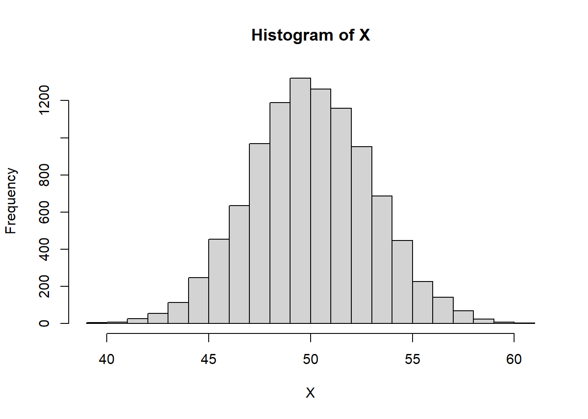
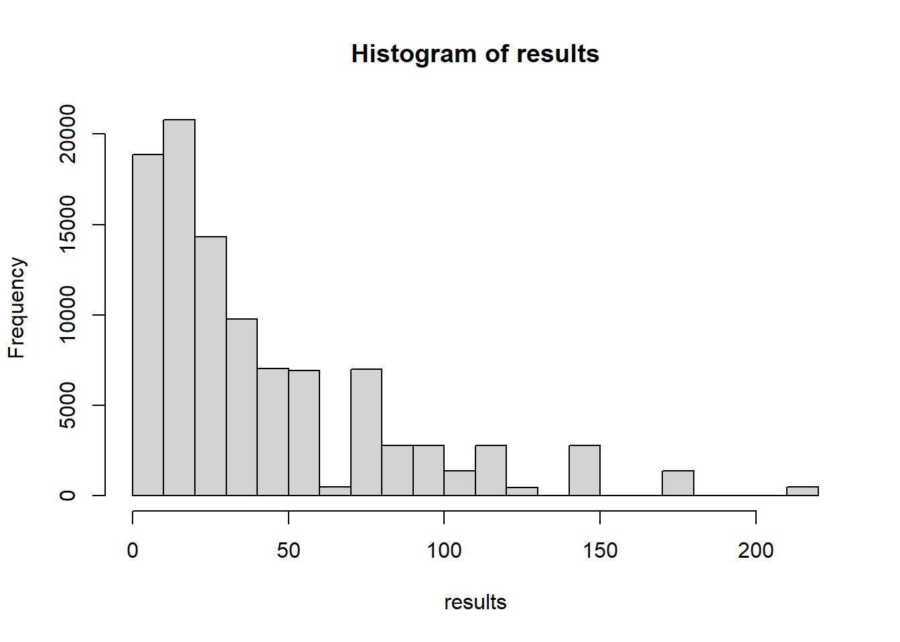
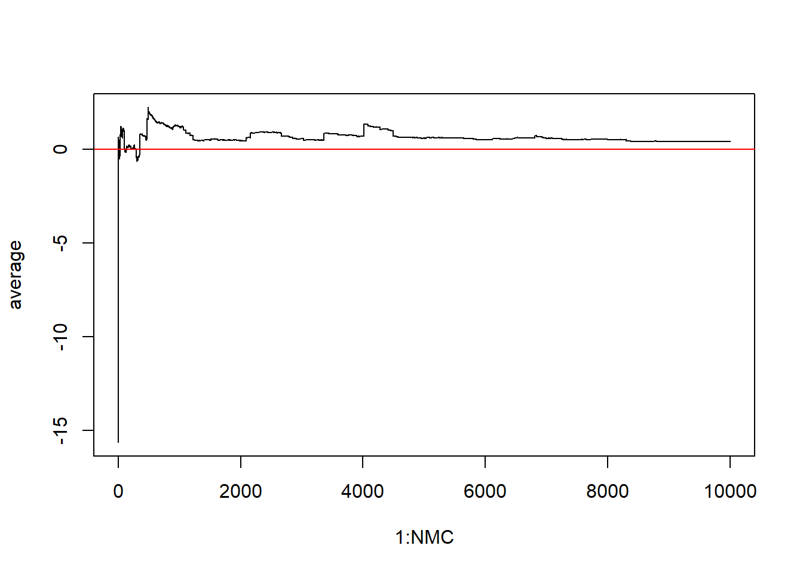
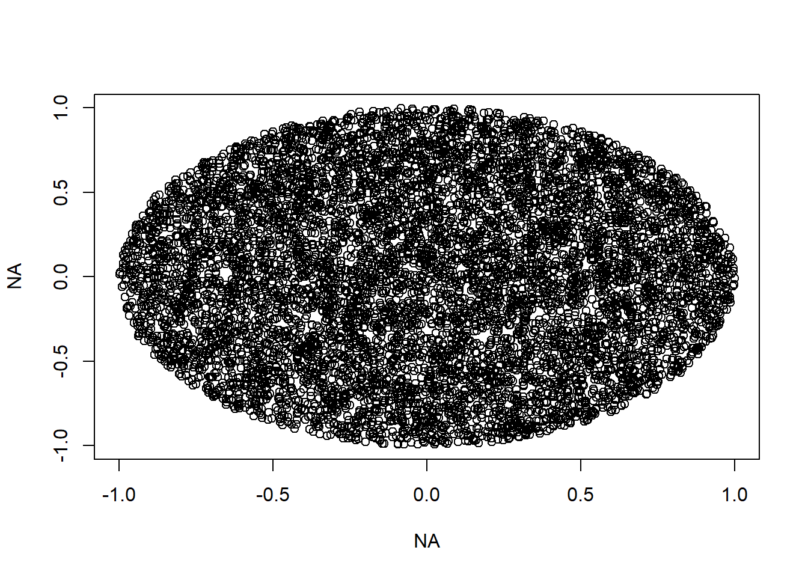
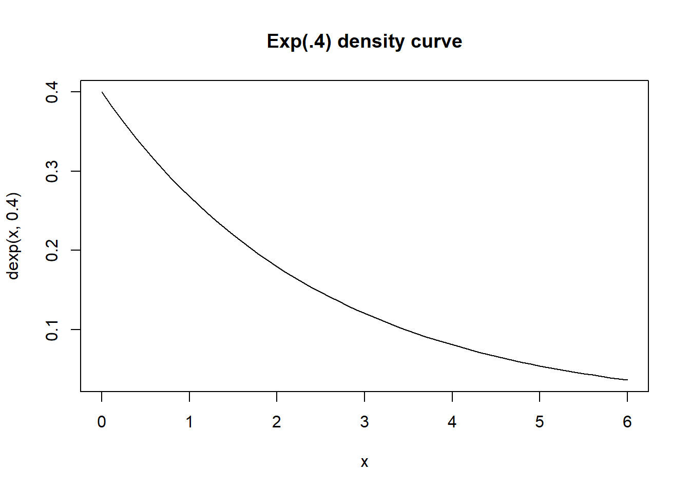

Consider two random variables: \(X\sim N(5, 3^2)\) is normally distributed with a mean of \(\mu=5\) and a variance of \(\sigma^2=3^2\). \(Y\sim exp(.2)\), independent of X, is exponentially distributed with a rate parameter of \(\lambda=.2\). The Questions is what is the \(Pr[X > Y]\)?
Use Monte Carlo to estimate this probability.
set.seed(2)NMC <-100000#Many Monte Carlo replicatesresults <-rep(FALSE, NMC) # a vector for storing resultsfor(i in1:NMC){ X <-rnorm(1,5,3) Y <-rexp(1, .2) results[i] <- (X > Y) #TRUE or FALSE}mean(results) ### the proportion of TRUES out of all replicates
[1] 0.57455
10.1.2 Generate Many RVs at once
You can also avoid the loop entirely by just generating many random variables at once
set.seed(2)NMC <-100000#Many Monte Carlo replicatesX <-rnorm(NMC,5,3)Y <-rexp(NMC, .2)mean(X > Y) ### the proportion of TRUES out of all replicates
[1] 0.57829
10.1.3 The replicate() function
You can also use the replicate function. It can avoid the need for a loop
set.seed(2)NMC <-100000#Many Monte Carlo replicatesresults <-replicate(NMC, rnorm(1,5,3)>rexp(1,.2))#replicate( how many times, expression)#this creates a vector of replicates! So easy!mean(results) ### the proportion of TRUES out of all replicates
[1] 0.57455
10.2 Expected Value Estimation using Monte Carlo
10.2.1 Weak Law of Large Numbers Example
Demonstration of how larger samples leads the sample mean to approach expected value
10.2.2 Demonstration of the law of large numbers in Monte Carlo expected value estimation
For example, say you want to estimate the mean of an exponential distribution. In principal, we can simulate many values \(X_1, X_2, \ldots, X_M\) from this distribution, average them and that’s going to be our estimate of the \(EX\)
10.2.3 Estimate the expected value of some weird random variable
Gamma distribution takes 2 parameters - shape and scale
Say X ~ Gamma(shape = 5, scale = 0.5)
Let’s estimate it’s expected value using Monte carlo - with just 100 runs. We’ll do it 5 times to compare the estimates.
set.seed(1)MCN <-100#stands for Monte Carlo Nfor(i in1:5){#generate a bunch of values from the random variable myData <-rgamma(MCN, shape=5, scale=.5)# hist(myData)#Law of Large Numbers says that the sample average should be close to EXprint(mean(myData))}
What’s your guess as to the true expected value? Hint: the parameters are 5 and .5. Do you have a guess?
Let’s generate 10 million random values and see what we get for the mean.
MCN <-10000000#stands for Monte Carlo N#generate a bunch of values from the random variablemyData <-rgamma(MCN, shape=5, scale=.5)#Law of Large Numbers says that the sample average should be close to EXmean(myData)
[1] 2.500108
Let’s consider a random variable Y which is the square root of a exponential random variable X with rate parameter 3
\(E(X) = 1/3 = .333333\)
Guess what might be \(E(Y)=E(\sqrt{X})\)? maybe \(\sqrt{1/3} = 0.5773503\)?
Let’s check using MC method.
X <-rexp(1000000, rate=3)Y <-sqrt(X)mean(Y)
[1] 0.5116081
No ! it turns out that EY = .511 or so.
In general \(E(g(X))\) is not \(g(E(X))\)
10.2.4 A time when Monte Carlo fails - when the expected value does not exist.
The Cauchy Distribution is a weird one. It has no defined expected value. It is actually just a T distribution with 1 degree of freedom! Same thing.
Here’s a picture of its density function from -10 to 10.
plot(x=seq(-10,10,.01), y=dcauchy(seq(-10,10,.01)), type="l", main="density of Cauchy Distribution", xlab="x", ylab="density")

Here’s an example of a sample from the Cauchy:
hist(rcauchy(1000))

Chances are you get at least one extreme extreme value. That’s the effect of having FAT tails.
Let’s just look at what the long term average would be
The cumulative average approaches 0 until one extreme value is sampled and then it throws off the average. Then the average slowly approaches 0 again until another extreme value throws everything off. This is what happens when expected value is not defined - law of large numbers cannot take effect.
But when the t distribution has 2 degrees of freedome we see a very different pattern emerge:
Problem is the variance is still undefined. The variance is infinity for \(df \leq 2\). When the mean is defined and the variance is finite we start to see the Law of Large Numbers get involved
10.2.5 Estimate the expected value of log(X) where X~Normal
mu <-4sigma <-5NMC <-10000X <-rnorm(NMC, mean=mu, sd=sigma)#Look a the histogramhist(X)

Y <-log(abs(X))#histogram of log|X|hist(Y)
mean(Y)
[1] 1.272277
10.2.6 St Petersburg Game
The game goes like this:
I (the Casino) put one dollar in the pot I flip a coin. If it’s a tails, I double the pot If it is heads, you win the pot.
IT costs money to play the game!!! First question: what is a fair price to play the game?
A random variable without a defined expected value; Monte Carlo will fail us!
#we can simulate M plays of the game with simply M geometric random values from geom(.5)M <-1000000t <-rgeom(M, .5) #t is number tails per gamewinnings <-2^tmean(winnings)
[1] 11.19202
10.3 Probability Calculation by Monte Carlo
10.3.1 A Normal Example
Suppose we want to calculate a normal RV probability. Say X follows a normal distribution with mean 8 and standard deviation 2.
What is the probability that X is between 8.4 and 9.9? And let’s also imagine we don’t know how to use pnorm.
M <-1000000#this is the number of Monte Carlo replicates to makeX <-rnorm(M, mean=8, sd=2)mean(X >8.4& X <9.9)
[1] 0.248712
pnorm(9.9, 8,2)-pnorm(8.4, 8,2)
[1] 0.2496842
10.3.2 The Birthday Problem.
If you have n people together, what is the probability that at least 2 of them share a birthday?
simulateBirthdays <-function(n){#birthdays will be numbers from 1 to 365#we'll assume that each day of the year is equally likely (this is probably not true in real life)return (sample(x =1:365, size=n, replace=TRUE))}checkSharedBirthdays <-function(birthdays){#We'll use the unique function#given a vector X of values, unique(X) gives the unique valuesreturn (length(unique(birthdays)) <length(birthdays))}
We’ll do a Monte Carlo simulation to estimate the probability of a shared birthday when we have 19 people
NMC <-10000results <-vector("logical")for(i in1:NMC){ simBirthdays <-simulateBirthdays(19) results[i] <-checkSharedBirthdays(simBirthdays)}#estimate the probabilitymean(results)
[1] 0.376
Repeat with other values of n
NMC <-100000results <-vector("logical")for(i in1:NMC){ simBirthdays <-simulateBirthdays(23) results[i] <-checkSharedBirthdays(simBirthdays)}#estimate the probabilitymean(results)
[1] 0.51082
10.3.3 Buffon’s Needles
We want to modify the example from class to take 3 parameters: L: length of the needles W: the width of the floorbords M: the number of Monte Carlo replicates
This will simulate the Buffon Needle experiment with M needles of length L on a floor with line width W. The needle.crosses function returns a single needle’s result - did it cross a floor line (TRUE or FALSE).
#I will dispense with the x coordinates entirely. needle.crosses <-function(L, W){ y <-runif(1, -W, W) angle <-runif(1, 0, pi) dy <- L/2*sin(angle) y1 <- y-dy y2 <- y+dyreturn( floor(y1/W)!=floor(y2/W)) #divide by W tells us which board number the endpoint is on, }buffon.prob <-function(L, W, M){ results <-rep(0, M)for(i in1:M){ results[i] <-needle.crosses(L,W) }return(mean(results))}#testbuffon.prob(1, 1, 10000)
[1] 0.6381
#What if the floor boards are 2 units wide??buffon.prob(1, 2, 10000)
[1] 0.3128
10.3.4 Example: the Monty Hall Problem
Okay, it’s time for a probability and statistics rite of passage: the Monty Hall problem.
The setup is as follows: you, the contestant, are faced with three doors. Behind one of the doors is the grand prize (a million dollars, a new car, a MacGuffin; use your imagination). Behind the other two doors are goats (in this hypothetical universe, a goat is not a prize you want; I disagree with this sentiment, but that’s beside the point). You get to choose a door, and you win the prize behind that door.
Suppose that you choose a door at random. Having chosen that door, the host Monty Hall opens one of the other doors to reveal a goat (i.e., not the Grand Prize), and Monty Hall offers you a choice: you can stick with the door you chose and win whatever prize is behind that door, or you can switch your choice to the other door, which Monty Hall has not yet opened.
Should you switch your choice of door?
On first glance, most people agree that it should make no difference– your original choice of door was random, so whether you switch your guess or not, you’re still equally likely to have chosen the door with the Grand Prize.
But this intuition is incorrect! Let’s check with a simulation, first.
generate_game_state <-function() {# Generate a random instance of the Monty Hall game.# That is, a random assignment of prizes to doors# and an initial guess for our contestant.# Generate an assignment of prizes/goats to doors.# We'll encode the Grand Prize as a 1 and the goats as 0s.# Reminder: sample(v) just returns a random permutation# of the entries of v. prizes <-sample( c(1,0,0) );# Now, let's randomly pick a door to guess.# We pick door number 1, 2 or 3.# Use sample() to choose from {1,2,3} uniformly at random doors <-c(1,2,3) guess <-sample( doors, size=1);# Record the other two doors.# x[-c] returns the entries of x NOT in vector c. otherdoors <- doors[-guess];# Return a list object, which will be easier to work with# when we want to access the different pieces of game# information game <-list(prizes=prizes, guess=guess,otherdoors=otherdoors );return( game )}run_game_noswitch <-function() {# Run one iteration of Let's Make a Deal,# in which we do NOT switch our guess.# Generate a game. game <-generate_game_state()# Now, Monty Hall has to reveal a door to us.# If we were switching our guess, we would need to do some# extra work to check some conditions (see below for that),# but since we're not switching, let's just cut to the# chase and see if we won the prize or not.# Remember, game$prizes is a vector of 0s and 1s, encoding# the prizes behind the three doors.# game$guess is 1, 2 or 3, encoding which door we guessedreturn( game$prizes[game$guess] )}run_game_yesswitch <-function() {# Run one iteration of Let's Make a Deal,# in which we DO switch our guess.# Generate a game. game <-generate_game_state() guess <- game$guess; # We're going to switch this guess.# Now, Monty Hall has to reveal a door to us.# To do that, we need to look at the other doors,# and reveal that one of them has a goat behind it.# game$otherdoors is a vector of length 2, encoding the# two doors that we didn't look at.# So let's look at them one at a time.# Note: there are other, more clever ways to write# this code, but this is the simplest implementation# to think about, in my opinion.if( game$prizes[game$otherdoors[1]]==0 ){# The first non-guessed door doesn't have a goat# behind it, so Monty Hall shows us the goat behind# that door, and we need to switch our guess to the# *other* door that we didn't choose. guess <- game$otherdoors[2]; } else {# If the Grand Prize is behind otherdoors[1],# so that game$otherdoors[1]]==1,# then Monty Hall is going to show us a goat behind# otherdoors[2], and we have the option to switch our# guess to otherdoors[1],# and we will exercise that option guess <- game$otherdoors[1]; }# Now check if we won the prize!return( game$prizes[guess] )}
Okay, we’ve got simulations implemented for both of our two different game strategies. Let’s simulate both of these a bunch of times and compare the long-run average success.
M <-1e4;noswitch_wins <-0;for(i in1:M) { noswitch_wins <- noswitch_wins +run_game_noswitch()}noswitch_wins/M
[1] 0.3357
Now, let’s see how we do if we switch our guesses.
M <-1e4;yesswitch_wins <-0;for(i in1:M) { yesswitch_wins <- yesswitch_wins +run_game_yesswitch()}yesswitch_wins/M
[1] 0.665
Wow! That’s a lot better than the strategy where we don’t switch our guess!
This discrepancy can be explained using Bayes’ rule, but it gets a bit involved (see the wikipedia page if you’re really curious).
Instead, let’s just think about the following: suppose that the Grand Prize is behind door number 1. There are three possibilities, all equally likely (because we chose uniformly at random among the three doors):
We pick door 1. We have chosen the door with the Grand Prize behind it. In this situation, the other two doors both have goats behind them, and Monty Hall reveals one of those two goats to us. In this situation, we (mistakenly, so sad!) switch our Grand Prize door for a goat door and we lose.
We pick door 2. We have chosen a door with a goat behind it. Of the other two doors, only one has a goat, door 3. Monty Hall shows us the goat behind that door, and we switch our guess to the other door, door 1, which has the Grand Prize behind it. Hooray!
We pick door 3. We have chosen a door with a goat behind it. Of the other two doors, only one has a goat, door 2. Monty Hall shows us the goat behind that door, and we switch our guess to the other door, door 1, which has the Grand Prize behind it. Hooray!
So, of the three equally likely situations, we win the Grand Prize in two of them, and our probability of winning is thus \(2/3\). Compare that with our \(1/3\) probability of winning in the situation where we don’t switch doors. Not bad!
The important point here is that our decision to switch doors is made conditional upon the information from Monty Hall that eliminates one of the three doors for us.
10.3.5 A Combination of Random Variables
Let X be the product of 3 normal random variables Y1, Y2 and Y3, with means 3, 6, and -2 and standard deviations 5, 6 and 9
dieY <-c(3,3,3,3,3,3)dieB <-c(0,0,4,4,4,4)dieG <-c(1,1,1,5,5,5)dieR <-c(2,2,2,2,6,6)notTdice <-data.frame(dieY,dieB,dieG,dieR)rollDice <-function(die1,die2,N){#true if player 1 winsreturn(sample(notTdice[,die1],N,replace=TRUE) >sample(notTdice[,die2],N,replace=TRUE))}MCN <-10000dieColors <-c("yellow","blue","green","red")for(i in1:3){for(j in ((i+1):4)){ results =rollDice(i,j,MCN)print(paste(dieColors[i],"vs", dieColors[j],":", dieColors[i],"win proportion is ",mean(results))) }}
[1] "yellow vs blue : yellow win proportion is 0.3343"
[1] "yellow vs green : yellow win proportion is 0.492"
[1] "yellow vs red : yellow win proportion is 0.6617"
[1] "blue vs green : blue win proportion is 0.3283"
[1] "blue vs red : blue win proportion is 0.4541"
[1] "green vs red : green win proportion is 0.3378"
10.3.8 Miwin’s Dice
Miwin’s Dice were invented in 1975 by the physicist Michael Winkelmann.
Consider a set of three dice such that
die A has sides 1, 2, 5, 6, 7, 9 die B has sides 1, 3, 4, 5, 8, 9 die C has sides 2, 3, 4, 6, 7, 8
What are the winning probabilities for these dice in the game?
g <-function(x){return(3*x -2*log(x)-x^2)}M <-10000results <-vector("numeric") #empty numerical vector#I am going to sample from X~unif(7,14) and I want to evalute h(x) = g(x)/f(x), where f(x) is the density of Xfor(i in1:M){ x <-runif(1, 7, 14) results[i] <-g(x)/dunif(x, 7, 14) #this is h(x)}mean(results)
[1] -615.2348
-2*log(13492928512)-3395/6
[1] -612.4842
10.4.2 Example 2
\[\int_1^7\ln(3x^2-2)\sin x dx\]
M <-10000#step 1, sample from unif(1,7) x <-runif(M, 1,7)g <-function(x){log(3*x^2-2)*sin(x)}f <-function(x){dunif(x, 1, 7)}h <-g(x)/f(x)mean(h)
[1] -4.191919
10.5 Other Examples
10.5.1 Estimating Euler’s constant
A fact - if you sample \(X_1, X_2, \ldots\) from Unif(0,1), and let \(Y\) be the index for which the sum exceeds 1, the expected value of \(Y\) is \(e\).
NMC <-10000; # Number of Monte Carlo replicatesplot(NA,NA, xlim=c(-1,1), ylim=c(-1,1))in_circ <-0; # Count how many points landed in the circle# For-loop over the MC replicatesfor(i in1:NMC){# for each point, generate (x,y) randomly between -1 and 1 point <-runif(n=2, min=-1, max=1);# to be inside circle, our point must satisfy xˆ2 + yˆ2 <= 1if(point[1]^2+ point[2]^2<=1){# if inside, add to count in_circ <- in_circ+1points(point[1],point[2]) }}

#To get proportion of square covered, take in_circ/Nprop <- in_circ/NMC# to get our estimate of pi, multiply by 4.pi.mc <-4*proppi.mc
[1] 3.1344
10.6 Random Variable Generation
10.6.1 Distribution of F(X) is uniform(0,1)
#Sample from the normal distribution, let's get 1000 values from N(mean=5, var=8^2)X <-rnorm(10000, 5, sd=8)hist(X)
We can use this idea to generate random values from any distribution we want as long as we can specify the inverse CDF.
We’re going to use the inverse CDF trick to simulate a bunch of values from a normal distribution with mean 6 and standard deviation 2.
u <-runif(10000) #These are my values sampled uniformly# at random from 0 to 1. These represent# Left tail probabilitiesx <-qnorm(u, mean=6, sd=2)mean(x)
Say I want to get 1000 values from an exponential distribution
x<-seq(0, 20,.1)y<-dexp(x, rate=1)plot(x,y, type="l", main="the density function of X ~ exp(1)")

#Here is what R would doU <-runif(1000)X <-qexp(U, rate=1) #This is the inverse CDF of X#in theory, X data should be distributed by exp(1)hist(X, probability=TRUE)lines(x,y, col="red")